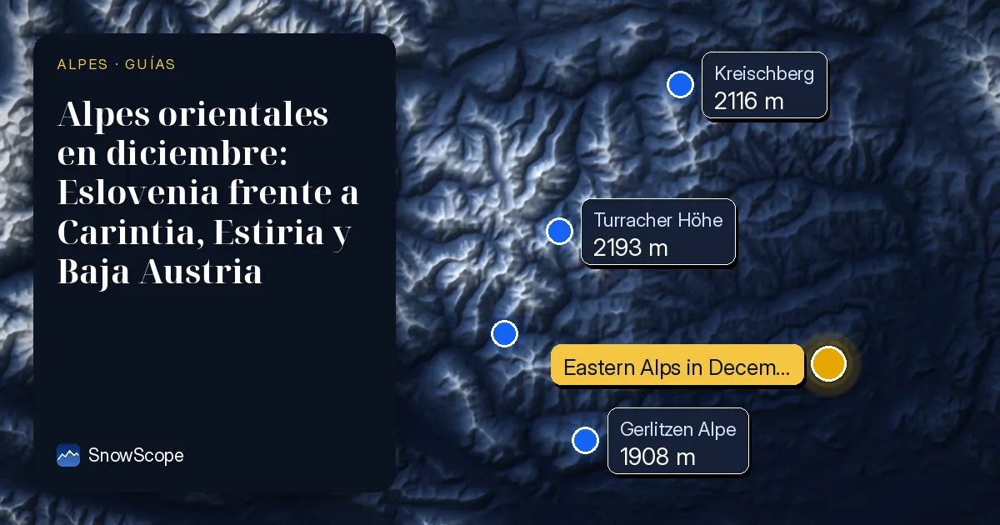
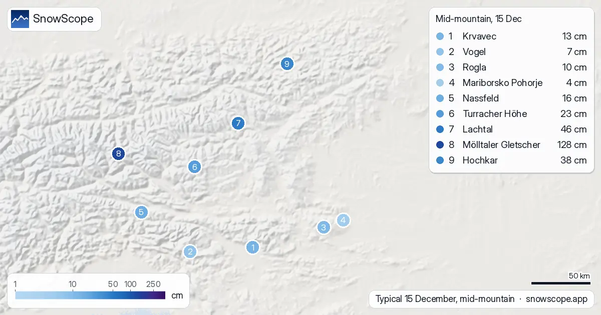

Alpes orientales en diciembre: Eslovenia frente a Carintia, Estiria y Baja Austria
Cuanto más al este de los Alpes, más bajan los precios, y también la nieve de diciembre. Eslovenia tiene los forfaits más baratos de esta comparación, desde 45 EUR el día, pero en Krvavec, Vogel, Rogla y Mariborsko Pohorje como mucho el 24 % de nuestros inviernos tenía 30 cm a media montaña la semana del 15 al 21 de diciembre. El lado austriaco cuesta más y da más.
Consulta la previsión de nieve en tiempo real de Eastern Alps in December en la app SnowScopeEspesor de nieve, alertas de nieve polvo y mapa 3D, gratis.
La respuesta corta
Si necesitas nieve natural en diciembre, ve a las zonas austriacas más altas: el Mölltaler Gletscher (8), Lachtal (7) o el Hochkar (9). Si vives cerca de Liubliana o Maribor y puedes decidir el mismo día, las colinas eslovenas son muy buena compra cuando sus propios partes de nieve son buenos.
Una nota sobre el alcance: solo comparamos estaciones de las que tenemos 46 inviernos de histórico de nieve. Las de Chequia, Eslovaquia, Polonia, Rumanía y Bulgaria aún no están en nuestro histórico, así que no aparecen en esta clasificación.

Eslovenia: barata y sincera con la nieve
Krvavec (1) es la más alta de las cuatro, con remontes hasta 1963 m, y la más visitada desde Liubliana. El día cuesta 47 EUR y los 6 días 205 EUR. La media montaña tenía 30 cm a mediados de diciembre en el 24 % de nuestros inviernos, y solo en el 13 % de las semanas de Navidad recientes.
Rogla (3) es parecida: 49 EUR el día (44 EUR en temporada temprana), de 210 a 237 EUR por 6 días y el 22 % de inviernos con 30 cm a media montaña a mitad de mes. Vogel (2), sobre el lago Bohinj, cuesta 49 EUR el día y 230 EUR los 6 días; su cima tenía 30 cm en el 30 % de los inviernos, su parte media en el 9 %. Mariborsko Pohorje (4), la más baja, cuesta 45 EUR el día y en ninguno de nuestros inviernos tuvo 30 cm a media montaña esa semana.
Carintia: un glaciar y dos apuestas
El Mölltaler Gletscher (8) es lo único seguro de la región: 128 cm a media montaña un 15 de diciembre típico y 30 cm a mitad de mes en todos nuestros inviernos. Su forfait de 6 días costaba 332 EUR en temporada baja según su última tarifa publicada (2025-26).
Nassfeld (5), en la frontera italiana, es grande (70 km de pistas cartografiadas) pero baja en la base: su cima tenía 30 cm a mediados de diciembre en el 63 % de los inviernos, su parte media en el 22 %. Seis días cuestan 353 EUR al principio de la temporada y 381 EUR después. La Turracher Höhe (6) es parecida en nieve (39 % a media montaña) y en precio (353 EUR por 6 días en temporada baja).
Estiria y Baja Austria: el término medio
Lachtal (7), en Estiria, tenía 30 cm a media montaña a mediados de diciembre en el 72 % de los inviernos, por 62 EUR el día o 293,50 EUR los 6 días en el periodo menos caro. El Hochkar (9), en Baja Austria, tenía el 63 %, con precios de día dinámicos vistos desde 32,90 EUR en días tranquilos de diciembre.
Las dos han perdido mucha nieve de diciembre con los años: tómalas como destinos para cuando la previsión sea buena, no como reservas fijas.
Cómo elegir
Semana fija antes de Navidad sin riesgo de nieve: Mölltaler Gletscher. Puente barato decidido tarde: Lachtal o el Hochkar. Excursiones de un día desde ciudades eslovenas: Krvavec o Rogla los días en que sus pistas figuran abiertas y cubiertas. Para todo lo demás en Eslovenia, enero y febrero son los meses más seguros.
Consejos para esquiadores
- En Eslovenia compra días sueltos los días buenos en vez de una semana de diciembre por adelantado.
- Para una semana fija de diciembre en esta región, el Mölltaler Gletscher es la única nieve casi segura.
- Usa el mapa de nieve unos días antes: las colinas del este cambian rápido con cada temporal.
- Lee el boletín de aludes esloveno, de Carintia o de Estiria antes de salir de pista.
Referencias y créditos
- Krvavec: official lift-pass prices (2026-27), checked 13 November 2026 rtc-krvavec.si/cenik-urnik
- Vogel: official lift-pass prices (2026-27), checked 13 November 2026 vogel.si/cenik-zima/
- Rogla: official lift-pass prices (2026-27), checked 13 November 2026 www.rogla.eu/sl/aktualna-ponudba/ceniki/zimske-aktivnosti/cenik-smucarskih-vozovnic-v-sezoni-20262027/
- Mariborsko Pohorje: official lift-pass prices (2026-27), checked 13 November 2026 www.visitpohorje.si/ceniki/smucisce/
- Nassfeld: official lift-pass prices (2026-27), checked 13 November 2026 www.nassfeld.at/en/Winter-World/Sun-Ski-World/Skigebiet-Nassfeld/Skipasspreise/Tages-Mehrtageskarten
- Turracher Höhe: official lift-pass prices (2026-27), checked 13 November 2026 www.turracherhoehe.at/en/winter/tariffs
- Lachtal: official lift-pass prices (2026-27), checked 13 November 2026 www.lachtal.at/en/tickets-prices/day-ski-passes/
- Mölltaler Gletscher: official lift-pass prices (2025-26), checked 13 November 2026 www.moelltaler-gletscher.at/en/price-list/winter/moelltaler-gletscher
- Hochkar: official lift-pass prices (2026-27), checked 13 November 2026 shop.hochkar.com/en/products/skitickets
Sobre estas cifras
Cifras de nieve: histórico de nieve de SnowScope, 46 inviernos pasados (1980-81 a 2025-26) a las alturas de la estación, corregido por altitud (una estimación para una zona, no partes de la estación); «buena nieve» = 30 cm o más en el suelo de media en la semana. Mapa: nuestro espesor habitual el 15 de diciembre repartido sobre el relieve según la altura. Pistas y remontes: cartografía OpenSkiMap. Forfaits: tarifas oficiales de las estaciones, comprobadas el 13 de noviembre de 2026; los precios pueden cambiar.
Citar este informe
Para investigación, docencia o prensa: cifras y gráficos reutilizables libremente bajo CC BY 4.0 con esta cita.
SnowScope (2026), Alpes orientales en diciembre: Eslovenia frente a Carintia, Estiria y Baja Austria, https://snowscope.app/blog/es/2026/11/eastern-alps-december-ski-value-slovenia-carinthia-styria.html, consultado el 2026-11-14
SnowScope (Atlas Labs). (2026, November 14). Alpes orientales en diciembre: Eslovenia frente a Carintia, Estiria y Baja Austria. SnowScope snow reports. https://snowscope.app/blog/es/2026/11/eastern-alps-december-ski-value-slovenia-carinthia-styria.html
BibTeX
@misc{snowscope2026easternalpsdecemberskiva,
author = {{SnowScope (Atlas Labs)}},
title = {Alpes orientales en diciembre: Eslovenia frente a Carintia, Estiria y Baja Austria},
year = {2026},
month = nov,
howpublished = {\url{https://snowscope.app/blog/es/2026/11/eastern-alps-december-ski-value-slovenia-carinthia-styria.html}},
note = {Published 2026-11-14 17:54 UTC; accessed 2026-11-14}
}· CC BY 4.0 · Métodos, datos y herramientas →
Sigue Eastern Alps in December
Gratis: un aviso cuando llega la nieve y la previsión cada mañana.
Más partes de nieve

Austria antes de Navidad: Galtür 258 EUR y Kühtai 269 EUR por 6 días, con 30 cm en más del 90 % de los inviernos; los glaciares cuestan más, las estaciones pequeñas son una apuesta.

Nuestra serie de 46 inviernos en los Alpes, 108 puntos de 667 a 3872 m: menos días de nieve en todos, claramente en el 81 %. Qué cambió y por qué.